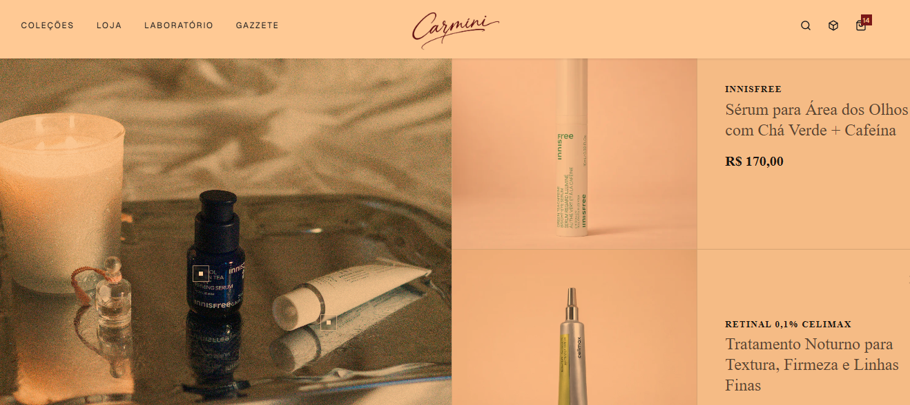

Desenvolvedor Front-End | Especialista em React e TypeScript

Sou um desenvolvedor front-end com foco em React e TypeScript. Curto criar aplicações rápidas, funcionais e com código limpo. Entrego códigos limpos e funcionais que contribuem fundamentalmente para o sucesso da equipe.
Brasília, Federal District, Brasil 🌎
FORMAÇÃO
BACHARELADO | Ciência da Computação
UnB - Universidade de Brasília
Bacharelado em Ciência da Computação (concluído), com formação sólida em fundamentos de programação, estruturas de dados, algoritmos e desenvolvimento de software. Profissional em constante evolução, com foco em aprimoramento contínuo por meio de cursos intensivos online, especializações e projetos práticos. Busco me manter sempre atualizado com as tecnologias mais recentes do mercado, especialmente no ecossistema de desenvolvimento front-end, com ênfase em React e TypeScript. Tenho experiência na construção de interfaces modernas, responsivas e performáticas, além de boas práticas de código, versionamento com Git e organização de projetos. Atualmente, estou me aperfeiçoando em Java.
CURSOS INTENSIVOS
- Alura
- Origamid
- HTML e CSS - 23h
- Python Módulos - 4h
EXPERIÊNCIA
FREELANCER | 2023 - Atualmente
Criação de Websites
Atuo como freelancer na criação de websites responsivos e modernos, utilizando React e TypeScript. Meu último projeto foi um site de grande escala.
TST - Tribunal Superior do Trabalho | Estágio (Out 2022 - Jan 2025)
Atuação no desenvolvimento front-end com foco em TypeScript, criando e mantendo componentes de interface dinâmicos para sistemas internos.
AGU - Advocacia-Geral da União | Estagiário de Programação (Jan 2018 - Jan 2021)
Atuação como estagiário de programação, focado no desenvolvimento e manutenção de software interno.
IDIOMAS
- Inglês | Avançado
- Espanhol | Mediano
- Italiano | Básico
PORTFÓLIO

Carmini
E-commerce de skincare de luxo.
Em construção
Projeto em desenvolvimento.
Em construção
Projeto em desenvolvimento.


Estou disponível para novos projetos no momento 👋